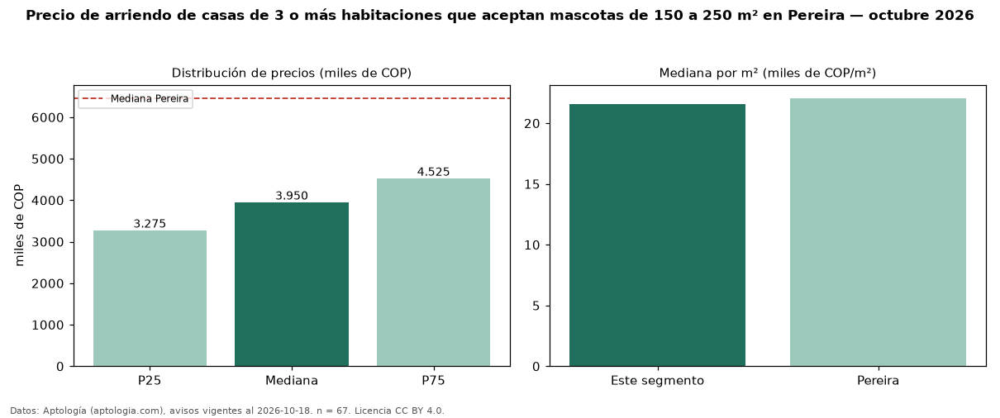

Precio de arriendo de casas de 3 o más habitaciones que aceptan mascotas de 150 a 250 m² en Pereira — octubre 2026
Con 67 avisos vigentes, el canon mediano de casas de 3 o más habitaciones que aceptan mascotas de 150 a 250 m² en arriendo en Pereira es COP 3,95 millones al mes. Frente a la mediana de las casas de 3 o más habitaciones que aceptan mascotas en arriendo de Pereira (COP 4,40 millones, n = 181), queda 10 % por debajo; este segmento reúne el 37 % de esos avisos. Por metro cuadrado, la mediana es COP 21.577/m² al mes (n = 67), 1 % por debajo de las casas de 3 o más habitaciones que aceptan mascotas en arriendo de Pereira (COP 21.845/m²). El área mediana anunciada es 170 m². La administración mediana declarada es COP 475.000 al mes (n = 62), aparte del canon. El estrato más frecuente es 5 (51 % de los avisos con estrato). La mediana de todas las casas en arriendo de Pereira es COP 6,46 millones (−39 % de diferencia). La mitad central de los avisos va de COP 3,27 millones a COP 4,53 millones (razón 1,4), una dispersión baja. Datos: Aptología (aptologia.com), CC BY 4.0 — https://www.aptologia.com/arriendo/pereira. Archivos: PDF, CSV con las cifras y gráfica PNG.

| Avisos únicos | 67 |
|---|---|
| Percentil 25 | COP 3.275.000 |
| Mediana | COP 3.950.000 |
| Percentil 75 | COP 4.525.000 |
| Mediana por m² | COP 21.576 |
Fuente: avisos vigentes de portales inmobiliarios recopilados por Aptología, deduplicados (mínimo 30 avisos únicos por celda). Precios pedidos, no cerrados. Fecha: 2026-10-18.